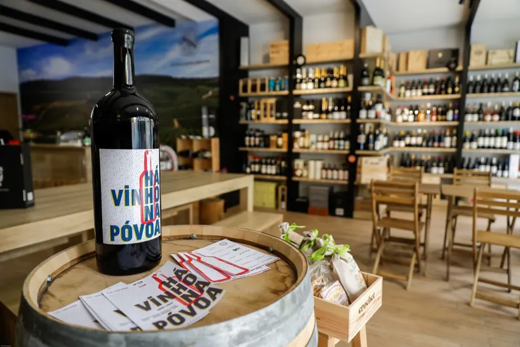

Ha mais de 15 anos, construímos uma equipe dedicada a proporcionar a melhor experiência em vinhos premium. Sempre pensando em oferecer o melhor para nossos clientes. Agora esse atendimento chegou também no site.

Uma empresa nascida de uma paixão da familia agnello por vinhos premium e tradição na produção de excelentes vinhos.
Abriu a loja em Sao paulo e fez do atendimento uma experiência única. Ele, como fundador, fez questao de conhecer cada rótulo antes de colocá-lo na prateleira.
"Vinho bom é aquele que combina com o momento de quem vai beber."
Filha de Giulio, liderou a chegada da vinheria no mundo online, para que quem não pode ir na loja recebecesse a mesma orientação de sempre.
"O site precisava conversar com o cliente do mesmo jeito que a gente conversa no balcão."
Tintos do velho mundo
Tintos do velho mundo
Carnes vermelha, queijos curados e massas ao sugo
Dica do Marco: abra o tinto uns 30 minutos antes de servir para ele "respirar".
Brancos e espumantes
Serra Gaúcha e Loire
Dica da Helena: sirva espumantes bem gelados, entre 6 °C e 8 °C.
Vinhos para iniciantes
Chile e Argentina
Dica do Rafael: comece pelos tintos mais leves e frutados, como um Merlot ou um Carménère..
O mesmo cuidado da loja física, agora também pelo site.
Jantar, presente, comemoração ou evento: diga para quem é o vinho e quanto quer investir.
O consultor do dia sugere rótulos que combinam com o seu gosto e o seu orçamento.
Indicamos o prato ideal e a temperatura certa para servir cada vinho.
Busque na loja ou receba em casa, com a garrafa protegida até chegar à sua mesa.
Quem você não vê no balcão, mas cuida de cada garrafa até ela chegar até você.
| Equipe | Função |
|---|---|
| Sônia Martins | Administração e financeiro |
| Thiago Lopes | Estoque e adega: protege os vinhos de luz, calor e vibração |
| Juliana Reis | Compras e relacionamento com vinícolas |
| Dia | Consultor | Habilidade |
|---|---|---|
| Terça e quarta | Marco Ferraz | Tintos e vinhos de guarda |
| Quinta e sexta | Helena Duarte | Espumantes e eventos |
| Sábado | Rafael Ito | Primeira compra |
| Domingo | Giulio Agnello | Rótulos raros |